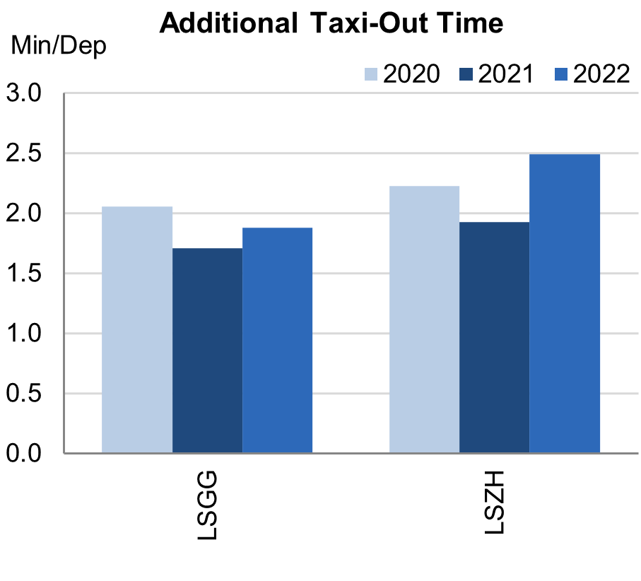
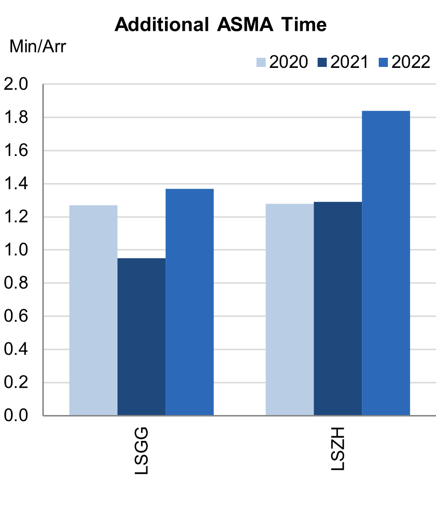
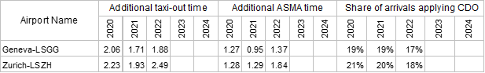

2.2 Airports
Overview
Switzerland identifies its two main airports Zurich (LSZH) and Geneva (LSGG) as subject to RP3 monitoring. Both airports have a fully implemented data flow that allows the proper monitoring of environmental indicators. Traffic in 2022 at these two airports was still 18% lower than in 2019,but recovered 69% with respect to 2021. Additional times have deteriorated at both Swiss airports under monitoring, however they are still below the 2019 values The shares of CDO flights reduced slightly for the monitored Swiss airports in 2022 and are still below the overall RP3 value.
Additional Taxi-Out Time

Additional taxi-out times at both Swiss airports increased in 2022 but remained under the SES average of 2.52 min/dep.
According to the Swiss monitoring report: Ground efficiency suffered from traffic increased during summer 2022. Performance remains however above the one of 2020 in GVA. Further improvements will stem from CP1 Airport Operation Plan deployment. It should be noted that taxi-out time depends on weather conditions, especially when de-icing is required.
Additional ASMA Time

Additional times in the terminal area significantly increased at both airports exceeding the SES average for 2022 of 1.06 min/arr. Zurich (LSZH; 2019: 2.91 min/arr.; 2020: 1.28 min/arr.; 2021: 1.29 min/arr.; 2022: 1.84 min/arr) resulted in the third highest additional time among the SES monitored airports in 2022, even if its performance was still better than in 2019. According to the Swiss monitoring report: Efficiency within the last 40NM (additional time in descent flight phase) around LSZH decreased in 2022 due to traffic increase. XMAN and Leading Optimised Runway Delivery (LORD) projects should help improving performance. ECTL is developing its indicator to differentiate structural and operational inefficiencies. On this basis, an analysis was performed by ECTL in 2022 for LSZH and discussed with operational experts.
Appendix
n/a: airport operator data flow not established, or more than two months of missing / non-validated data
